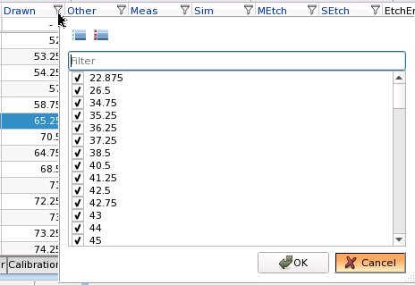

Gauge data loaded into Calibre nmModelflow
Four preset functional groups are available from the Column Manager. Clicking a group item at the top of the dialog box toggles the columns for that setting in the window below.
Select columns or groups of columns to show using the checkboxes. Alternatively, clicking Select All will select all columns, and clicking Select None will deselect all columns. The Filter input field allows you to search for columns by name. After your columns of interest are selected, click OK.
For definitions of the columns themselves, see “Gauge Column Listing”.
All — Shows all defined gauge data columns.
Basic — Limited information about the gauge, measurements, and weight.
Min — Only the minimum information about the gauge structure ID and the simulation data.
COT — Comprehensive Output Table. A customized output table consisting of groups of data.
Basic Information — Basic information identifying the gauge.
MoreInfo — Additional information about the gauge, such as orientation, type, group, and nominal weight.
PwInfo — Process window information on the active condition.
EtchInfo — Information relevant to etch calibration.
Resist Info — Information relevant to resist calibration.
AerialInfo — Information on the aerial image simulation at a constant threshold.
Coords — Coordinates for the gauge.
FocusInfoSim, FocusInfoMeas — Information on the through-focus data.
DofInfoSim, DofInfoMeas — Information on the depth of focus data.
DoseInfoSim, DoseInfoMeas — Information on the dose data.
StatMeasInfo — Statistical analysis items.
CustomCols — User-created columns show up in this list. If there are no user-created columns, this group does not appear. See “Adding User-Defined Columns to the Gauge Analysis Tab” for instructions on creating custom columns.
You can also use the + button to the right of the groups to create a custom group of your own, using the currently selected columns.
Action |
Notes |
|---|---|
Right-click a column header |
Brings up a menu with options to show, hide, add, remove, resize, and plot columns. Note:
There is no undo ability for modified data. Exercise caution when using commands that modify multiple values in a column. |
Type an expression in a column that has a “-” button in it |
Filters out all gauges that do not meet the expression criteria. You can enter filter strings or expressions.
|
Type a formula in a column that has a “-” button in it |
Entering a formula modifies the data. For example, entering in the Weight column sets the weight for the whole column. |
Right-click the filter icon (sieve button)  |
Opens a checkbox selector with all distinct items in that column. Selecting one or more items filters out the gauges to only the values selected. |
Click Multiple Sort |
Multiple sort mode uses the Drawn and Other columns as a sorting criteria. Clicking in the column “-” field adds that column to the sort priority list. Clicking the column again removes it from the sort list. Clicking Sort Off removes the sorting criteria. |
Shift-click to select multiple rows; Ctrl-click to add a row to the selection |
Perform operations on selected rows by right-clicking with rows selected. (Some operations are available as both a single process result and for all process windows, marked as “All PW”.) The following options are available:
Note:
The available options depend on the type of data that is activated. Some of these options are disabled when an active gauge has a single PW condition, and are enabled when an active gauge has multiple PW conditions. |
Menu Tab |
Control |
Description |
|---|---|---|
Gauges |
||
Load |
Loads gauges from a gauge, super gauge, or .csv file. The Load button also keeps a history of previously-loaded gauge files. |
|
Write |
Writes out gauges to a file. This button opens a prompt box to select the measurement method for gauges to be written. |
|
Split |
Splits the gauges into a calibration set and a validation set, writing the results to two separate files. |
|
Convert |
Converts a modelflow_v2 gauge file into a Calibre nmModelflow gauge file. |
|
Export |
Exports the entire universal spreadsheet (all columns active in the Column Manager) in the Gauge Analysis tab to a file. |
|
Import From Layer |
Imports gauges drawn on a specified layer in the active layout into the active gauge set. |
|
Close Gauge |
Closes the active gauge set. |
|
Close Contour |
Closes the active contour. |
|
Measure Drawn |
Fills a specified column with CD measurements taken from the active layout along gauge lines. Note:
Starting with the 2019.2 release, the dialog box can also detect SRAFs within a certain tolerance distance of the gauge. |
|
Gauges Center |
Centers gauges at the midpoints of geometries. See “Centering Gauges” for more information. |
|
Gauge Symmetry |
Tests for gauge symmetry in the direction perpendicular to the cutline by specifying a shift value, simulation type, and lithomodel. |
|
Gauge Extraprint |
Tests for extra printing between CTR and resist model simulations around gauges. See “Generating Extra Printing Information” for more information. |
|
Calculate MEEF |
Runs an extra simulation to calculate the MEEF for the active gauge, using a 1 nm resize factor by default. You can also use the “mdf simulate meef ” command to perform the following:
|
|
Threshold Optimize |
Optimizes image and resist thresholds for the active litho model. |
|
Clip Layout |
Clips the layout around gauge cutlines to obtain only the layout needed for model calibration. This is used to reduce the size of the layout in order to improve GUI response time and job preparation time. Clipping (also available in CM1 Center) limits the areas that need to be manipulated and saved to the contours and polygons near the gauge cutlines. |
|
Topo Enclosure |
Computes topoenclosures (distances from CD sites to the nearest edge of an underlying active or poly feature). Runs the ‘mdf gauges topoenclosure” command. Results are placed in the TopoEnclosure column. |
|
SRAF Count |
Computes the number of SRAFS crossed by a gauge. Results are placed in the SrafCount column. |
|
Process Window |
||
Dof |
Returns the common focus window width. Adds the “dof” and “dofcenter” columns to the Gauge Analysis tab. |
|
Doselat |
Returns the common focus window width. Adds the ‘doselat’ and ‘dosecenter’ columns to the Gauge Analysis tab. |
|
Filtbossung |
Filters the gauge list by specified criteria. |
|
Focen |
Returns the mean focus center. |
|
Dofcen |
Adjusts beamfocus by minimizing the meanfocus_shift value. |
|
Simulate |
Performs simulation for optics and resist, including etch if an etch model is part of the active litho model. |
|
Simulate Aerial |
Performs simulation for an aerial image model with a CTR resist. |
|
Simulate All |
Performs both the Simulate and Simulate Aerial functions. |
|
Cross Probe & Filter |
||
Highlight |
Highlights selected gauges. |
|
Unhighlight |
Clears the highlight on selected gauges. |
|
Unhighlight All |
Clears the highlight on all gauges. |
|
Invert Highlight |
Changes the highlighting of the currently highlighted gauges. |
|
Reg |
Highlights gauges inside a region you select in the Calibre WORKbench main layout viewer window. |
|
Prev / Next |
Centers the view in the main layout viewer on the current gauge (highlighted in green) in a selected set. The Prev and Next controls cycle through the set. |
|
Enable / Disable |
Toggles the enabled/disabled property of the selected gauges. |
|
Invert Enabled Gauges |
Changes the enabled/disabled property of all gauges to be the inverse of their current status. |
|
Selected |
Filters out all gauges except for the selected gauges. |
|
Highlighted |
Filters out all gauges except for gauges that you have highlighted. |
|
Enabled |
Filters out all gauges except enabled gauges. |
|
Empty Geom |
Filters out all gauges except for ones that have empty geometry. |
|
Filter 1D |
Filters out all gauges that are not designated as 1D gauges. |
|
Filter 2D |
Filters out all gauges that are not designated as 2D gauges. |
|
Pop Filter |
Removes the last filter that was applied. |
|
Clear Filters |
Removes all filters. |
|
Plot |
||
Gauge Data Plot |
Plots columns you select in a dialog box based off of the active gauge data. |
|
Cutline |
Reforms cutline measurements on a single gauge for one or more process window conditions. |
|
Thrufocus, Thrudose, Thruplane |
Generates a Bossung plot for a specified gauge for one or more process window conditions through the dose, focus, or image plane. |
|
Contour |
Plots contours for selected gauges. |
|